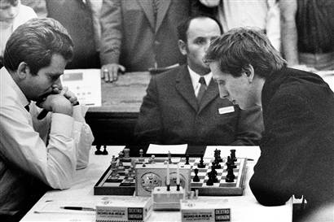

Bem-Vindo ao Tudo sobre Xadrez
A História do Xadrez
O Xadrez é um jogo tão antigo que, durante todos os anos de sua existência, várias foram as histórias associadas a sua origem.
A primeira história que se é contada mundialmente se passa na Índia. Havia uma pequena cidade chamada Taligana, e o único filho do poderoso rajá foi morto em uma sangrenta batalha. O rajá entrou em depressão e nunca havia conseguido superar a perda do filho. O grande problema era que o rajá não só estava morrendo aos poucos, como também estava se descuidando em relação ao seu reino. Era uma questão de tempo até que o reino caísse totalmente.
Vendo a queda do reino, um brâmane chamado Lahur Sessa, certo dia foi até o rei e lhe apresentou um tabuleiro contendo 64 quadrados, brancos e pretos, além de diversas peças que representavam fielmente as tropas do seu exército, a infantaria, a cavalaria, os carros de combate, os condutores de elefantes, o principal vizir e o próprio rajá.
O sacerdote disse ao rajá que tal jogo poderia acalmar seu espírito e que sem dúvida alguma, iria curar-se da depressão. De fato, tudo o que o brâmane disse acontecera, o rajá voltou a governar seu reino, tirando o a crise de seu caminho.
Era inexplicável como aquilo tudo aconteceu, sendo um único tabuleiro com peças o responsável por tirar a tristeza do rajá. Como recompensa, o brâmane foi agraciado com a oportunidade de pedir o que quisesse. Logo de primeira, ele recusou tal oferta, pois achava que não fosse merecedor de tal proposta, mas mediante insistência do rajá, ele fez um simples pedido. O brâmane pediu simplesmente um grão de trigo para a primeira casa do tabuleiro, dois para a segunda, quatro para a terceira, oito para a quarta e assim sucessivamente até a última casa. O rajá chegou a achar graça, tamanha a ingenuidade do pedido.
Entretanto, o humilde pedido do brâmane não era tão humilde assim. Após fazerem vários cálculos de quanto trigo eles teriam que dar para ele, descobriram que seria necessário toda a safra do reino por incríveis dois mil anos para atender ao pedido do sacerdote. Impressionado com a inteligência do brâmane, o rajá o convidou para ser o principal vizir (espécie de ministro, conselheiro do rajá) do reino, sendo perdoado por Sessa de sua grande dívida em trigo.
Na verdade, o que o brâmane apresentou para o rajá não foi o jogo de xadrez, foi a chaturanga, uma das principais variantes do jogo de xadrez moderno.
Outra grande possibilidade que se apresenta em diversas histórias sobre a origem do Xadrez, é que Ares, o deus da guerra, teria criado um tabuleiro para testar suas táticas de guerra (que eram bem limitadas, pois Ares nunca foi conhecido por ter tática nas suas batalhas, ele era simplesmente agressivo, atacando sem precisão alguma na maioria das vezes). Entretanto, cada peça do tabuleiro representava uma parte do seu exército, e assim foi, até que Ares teve um filho com uma mortal, e passou para ele os fundamentos do jogo. A partir de então, o jogo teria chegado ao conhecimento dos mortais.
É sabido que entre 1450 e 1850, o Xadrez começou a ter mudanças visíveis em relação ao que conhecemos hoje em dia. Foi nesse período que diversas peças ganharam movimentos que conhecemos atualmente, claro, todos esses movimentos e peças tendo como origem a Chaturanga.
O elefante (o antecessor do moderno bispo) somente podia mover-se em saltos por duas casas nas diagonais. O vizir (o antecessor da dama) somente uma casa nas diagonais. Os peões não podiam andar duas casas em seu primeiro movimento e não existia ainda o roque. Os peões somente podiam ser promovidos a vizir, que era a peça mais fraca, depois do peão, em razão da sua limitada mobilidade.
As regras do Xadrez que conhecemos hoje começaram a ser feitas em 1475, só não se sabe ao certo onde ocorreu esse início. Alguns historiadores divergem entre Espanha e Itália.
Foi neste período que os peões ganharam a mobilidade que conhecemos hoje em dia, que se resume em mover-se duas casas no seu primeiro movimento e tomar outros peões en passant. Nessa época também foram definido os novos movimentos dos bispos e da rainha e, o mais importante, a rainha tornou-se a peça mais importante do jogo, sendo a única capaz de se movimentar para qualquer lado e avançar ou recuar quantas casas quiser. Os movimento das demais peças, juntamente com o resto das regras que englobam todo o Xadrez, só foram formalmente modificadas no meio do século XIX, e tais regras ainda se mantêm até hoje.
Fotos Históricas

Alexander Alekhine x Jose Joaquim Araz Muñoz (1945)

Bobby Fisher x Fidel Castrp (1966)
- 
Bobby Fisher x Spassky (1970)
Curiosidades
O campeão mais jovem
O campeão nacional absoluto mais jovem de todos os tempos e de todas as modalidades esportivas é um jogador de Xadrez. Trata-se do peruano Júlio Granda Zuñinga, campeão nacional aos 6 anos de idade.
Xadrez na escola
O Xadrez é disciplina escolar obrigatória na Romênia e as notas em Matemática dependem em 33% do desempenho no Xadrez.
Movimento mais lento
O movimento mais lento registrado foi de Francisco R. Torres Trois, levou 2 horas e 20 minutos para fazer um movimento em um jogo contra Luis M.C.P. Santos, em Vigo, Espanha em 1980. Trois tinha somente dois movimentos possíveis a considerar.
As posições do Rei
Dois reis podem ocupar no tabuleiro 3612 posições diferentes. Dois reis e duas peças quaisquer podem forma, aproximadamente, 12.000.000 de posições diferentes. Dez peças: 34.254.125.120.000.000.
O Dia Internacional do Enxadrismo
O Dia Internacional do Enxadrismo é comemorado todos os anos no dia 19 de novembro, data de nascimento de José Raúl Capablanca, considerado um dos maiores enxadristas de todos os tempos e o único hispano-americano a se sagrar campeão mundial.